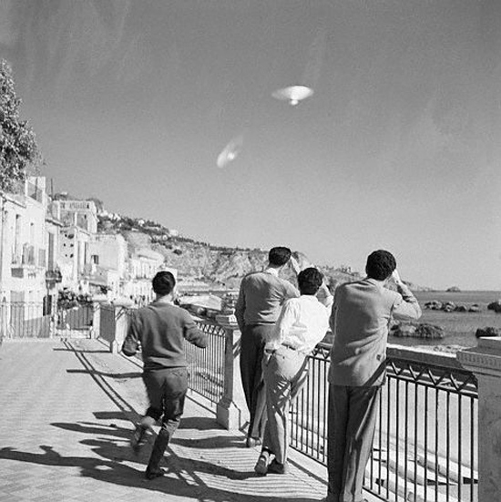

Couverture du n° de Fate de ce mois-ci sur le cas de l'observation de Goose Bay et d'une
déclaration de Hugh Dowding : Pourquoi je crois aux soucoupes
Début de la guerre d'Algérie.
À Poggio d'Ambra (Italie), MmeLotti Ddainelli (40 ans), se rend au cimetière quand elle aperçoit tout à coup un objet
ayant la forme de 2 cônes accolés par la base, posé dans un endroit herbeux. On peut distinguer 2 petits sièges
à l'intérieur du cône inférieur. De derrière l'objet apparaissent 2 nains mesurant 1 m, portant des combinaisons
grises et des casques rougeâtres s'exprimant dans une langue qu'elle ne pouvait comprendre, avec des sourires
qui laissaient entrevoir leurs petites dents blanches, ils prennent un pot de fleurs au témoin et s'envolèrent.
A Cremona (Italie), 2 étudiants, Pietro Alberini et
Pericle Sacchi, sont à la chasse quand ils aperçoivent 1 nain de 1 m de taille, avec une tête en caoutchouc
et dont le visage est relié par un tube flexible à un réservoir cylindrique qu'il porte sur son dos. Lorsqu'ils
s'approchent de lui, l'être s'enveloppa dans un nuage bleuâtre. Les témoins s'enfuient.
Un C-46 de la compagnie brésilienne Varig qui effectue un vol de Porto Alegre à
São
Paulo rencontre un objet inhabituel. Le pilote et le co-pilote aperçoivent une lumière rouge qui fonce sur eux.
Soudain, l'objet semble se déplacer selon un arc de cercle de 45° et grossit à vue d'oeil. L'intérieur de l'avion
sent le caoutchoux brûlé. Une fois l'objet disparu, le pilote et son second constatent que le radiogoniomètre, le
générateur et le poste émetteur sont endommagés.
A La-Roche-en-Breuil (France), Raymond R. voit 1 engin
faisant un bruit de gros transformateur et émettant une lumière orange, posé dans un pâturage. A côté se trouvent 3
hommes en combinaison sombre, l'un tenait une sorte de boîte qui émettait un rayon de lumière de 3 m de long,
les 2 autres tenaient des objets qui ressemblaient à des armes. Un autre témoin sent des picotements sur le visage
alors qu'il s'enfuit en courant. 4 photographies de la scène sont prises. Traces, une substance blanchâtre et un
cercle de 3 m de diamètre où le sol avait l'apparence de la cendre.
L'Aurore du 17, titrant sur La psychose collective des soucoupes volantes
A Voussac (France), en forêt de Vacheresse, des
personnes dignes de foi voient une sphère lumineuse atterrir à la lisière de la forêt et devenir alors sombre.
Le matin suivant, une enquête fera découvrir qu'à l'intérieur d'une zone de 4 à 5 m de diamètre il n'y avait pas
de feuille alors que le sol en est jonché partout ailleurs. La terre semble avoir été retournée.
A La Tessoualle (France), André Chaillou sent des picotements dans ses mains malgré ses gants lorsqu'un
disque de couleur bleue arrive près de son vélomoteur dont le circuit d'allumage a alors une défaillance. Il
reste incapable de bouger et d'articuler une parole pendant plusieurs minutes. Il redémarre aussitôt que la
lumière bleue s'éteint, et se dirige vers elle lorsqu'elle réapparaît 200 m plus loin, il voit l'objet, un cône
d'une taille de 5,5 m, s'élever à la verticale avec un léger siflement puis voler horizontalement vers le nord
Combat, 23 novembreParis-Presse, 24 novembre 1954.
À Aizenay (Vendée), malgré un épais brouillard, de
nombreux habitants sont intrigués par les évolutions d'un phénomène mystérieux lançant des lueurs tantôt jaunes,
tantôt d'un rouge vif La Vendée
Libre, 14 novembre 1954 < Barthel, Gérard & Brucker, Jacques: La
Grande Peur Martienne, Nouvelles éditions Rationalistes, 1979, pp. 132-133.
A La Roche-sur-Yon (Vendée), MmeAlbert (employée à -- La Ménagère -- chez M. Morillon) se rend chez le coiffeur, lorsqu'en passant rue Sadi-Carnot, elle aperçoit 1
grosse boule lumineuse de toutes les couleurs et semblant passer à très haute altitude à la vitesse de l'éclair.
Elle l'aperçoit au-dessus de la maison de MmeLarmanjat. Elle se dirige
vers la place circulaire. Le phénomène ne fait aucun bruit et ne laisse aucune trace de fumée derrière lui La Vendée Libre, 14 novembre 1954 < Barthel, G. & Brucker, J.:
La Grande Peur Martienne, Nouvelles éditions Rationalistes, 1979, pp. 132-133.
Aux Sables d'Olonne (Vendée), plusieurs habitants
aperçoivent un phénomène volant de la forme d'un cigare, duquel émanent des nappes de différentes couleurs La Vendée Libre, 14 novembre 1954 < Barthel, G. & Brucker, J.: La
Grande Peur Martienne, Nouvelles éditions Rationalistes, 1979, pp. 132-133.
A Berck (France), près de l'aéroport local, M. Davril voit un
engin ressemblant à une hutte ronde, à 300 m de distance. Il décolle sans bruit.
A Buchy (France), à l'intersection des routes N28 et N319, M. R.L., de Rouen, voit 1 engin lumineux qui
décolle. Il sent alors des picotements et est paralysé. Le moteur de sa voiture ralentit mais ne cale pas Quincy, Guy:.
Sur la route de la Corogne (Espagne), rencontre de Alberto Sanmartin Comes.
A La Roche-sur-Yon, un homme aperçoit dans le ciel 2 disques
rouges se suivant de près et partant à une vitesse vertigineuse en direction de l'est. Le témoin réintégre vite
le domicile des amis d'où il venait, et leur raconte son aventure "2 disques rouges dans le ciel", La
Vendée Libre, 21 novembre 1954.
Photographie à Taormina (Sicile). Faux probable par double exposition
Facteur XBettmann

(Eté ? 10 décembre ?) Observation au-dessus de Taormina (Sicile). Les objets semblent
avoir un diamètre de 30 m et sont silencieux. Plusieurs milliers de personnes peuvent les observer avant que les
chasseurs à réaction italiens de les mettent en fuite Edwards, Frank: 1966. Une double-exposition est suspectée, apparemment confirmée
par une enquête d'Antonio Blanco du CISU
(Italie).
La police française confirme que Marius Dewilde a fait une 2nde
déclaration, concernant un objet qu'il avait vu près de sa maison.
Observation à Corvallis (Oregon) Cas Blue Book n° 3331 non résolu.
A Moscou (Russie), des gens sur la Place Rouge
voient un objet cylindrique au-dessus de leurs têtes à une hauteur de 200 à 300 m, se déplaçant en direction du
nord-ouest. L'objet grimpe avec la vitesse d'un jet, prenant en même une position verticale Vallée, J.: 1966, p. 82.